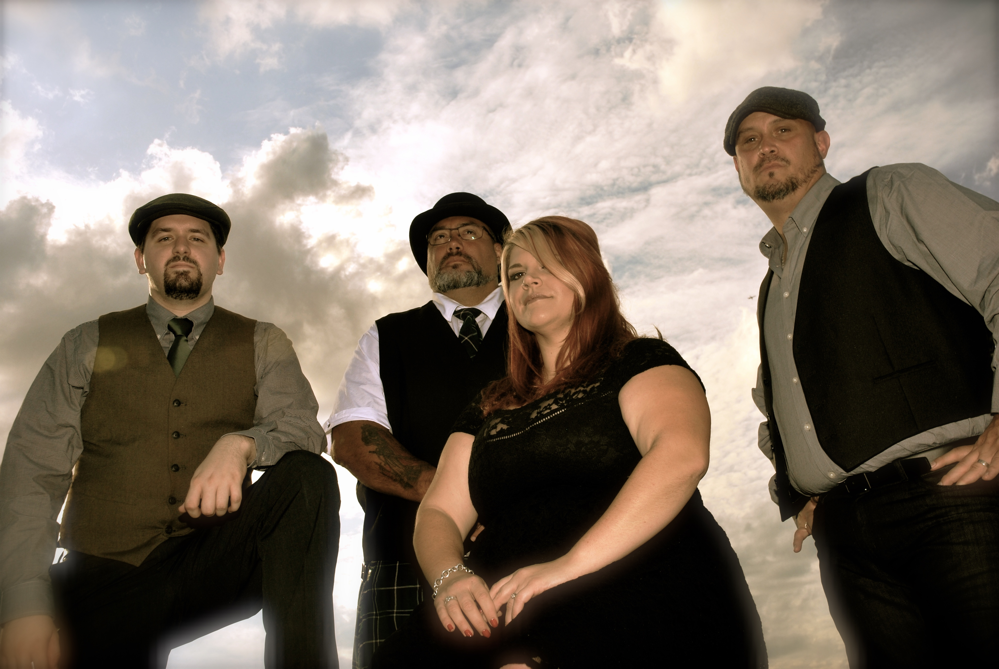
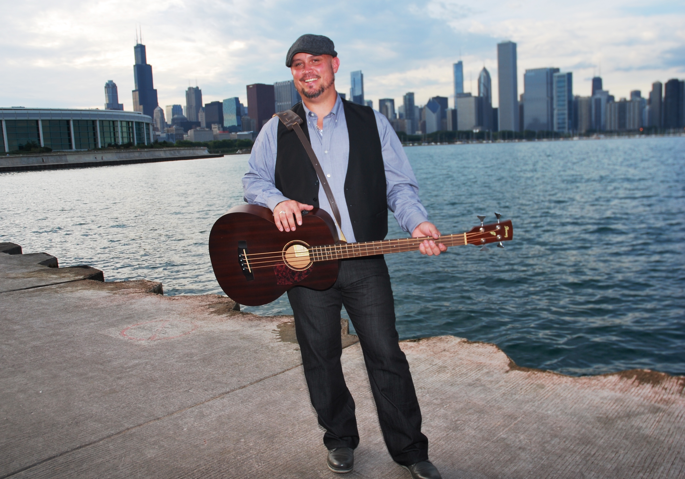

Deriving its name from the beautiful park in Dublin, St. Stephen’s Green brings awareness to Irish music with a repertoire spanning modern Irish rock while still paying tribute to traditional Irish folk and songs of rebellion. As someone enthralled with Irish culture, Matt started the band to bring a fresh perspective to Irish music in the Chicago-land area. By blending a female’s voice over the harmony of banjo, mandolin, guitar, bass, and drums, St. Stephen’s Green does just that.
St. Stephen’s Green borrows and modifies songs old and new; some influences include The Dubliners, The Pogues, The Saw Doctors, U2, the Wild Colonial Bhoys, and The High Kings. The band is always looking for Irish songs to add to the set list.
The band is being booked frequently in the Chicago area, and seeks venues in downstate Illinois and throughout the Midwest. Wherever an audience is interested in Irish music, St. Stephen’s Green is ready to play.
Liz Van Wormer
Liz was born and raised on the South Side of Chicago. From a young age, Liz enjoyed performing and would often sing in her church’s youth choir. In 2008, she travelled to Galway and Dublin, and fell in love with Irish culture. By chance, she met Matt in 2014, and joined the lineup of St. Stephen’s Green shortly after. Liz provides the unique vocal sound and talent that sets SSG apart from the rest. Liz is an English teacher on the South Side of Chicago, and is known for participating in singing competitions.
Band Role: Vocals, Flute
Favorite Irish Band/Artist: U2
Favorite Irish Song: With or Without You
Dane Stier
Dane grew up in rural Illinois before moving to Chicago in 2010. Although he started learning to play music at age 11, he was 17 before he bought his first guitar; months later he became lead guitarist in a Beatles cover band. Over the years he has acquired a major interest in Bob Dylan, as well as many musicians of the American and Irish folk tradition. Dane brings the traditional sound to St. Stephen's Green with the banjo and mandolin.
Band Role: Mandolin, Guitar, Banjo
Favorite Irish Band/Artist: The Dubliners
Favorite Irish Song: Spancil Hill
Matt Obrzut
Matt is also from the South Side of Chicago, but takes pride in his heritage from Westport, County Mayo, Ireland. He has been playing the guitar since 18, and has been most influenced by The Beatles, Oasis, The Pogues, and The Saw Doctors. His dream of starting an Irish band was realized in 2014, when he collaborated with several longtime friends to lay the foundation. When he is not playing the bass and acoustic guitar with St. Stephen's Green, he is probably playing rugby.
Band Role: Bass Guitar, Guitar
Favorite Irish Band/Artist: The Pogues
Favorite Irish Song: Young Ned of the Hill

Ron Delfmann
Ron is originally from Germany, born and raised. At 11 he got his first guitar and a year later started playing his first electric guitar. Ever since then he has learned how to play more and more instruments along the way. In the 80’s he did a lot of home recording, and throughout the 90’s he played in a Skiffle/Folk band, acquiring Mandolin and Tin Whistle skills and more. After moving to the U.S. in 2000, he played in a few classic rock projects and built his own little project studio. As luck would have it, he was contacted by Liz when St. Stephen’s Green was looking to expand their string lineup. Being that Celtic music was always in Ron’s heart, he was elated to meet with them and become a part of this awesome band.
Band Role: Electric Guitar, Mandolin
Favorite Irish Band/Artist: The Pogues
Favorite Irish Song: Mary Mac
Tony Baumann
Tony is a Chicago city boy, born and raised. Has been playing drums even before birth… according to his ma. Well versed in all areas of percussion, he has toured professionally. He has spent the last 16 years as a lead drummer in the Emerald Society Bagpipes and Drums. He loves bringing the rock to Irish folk and rebel music with any of his many drumsets.
Band Role: Drums, Percussion
Favorite Irish Band/Artist: The Pogues
Favorite Irish Song: Young Ned of the Hill
© St. Stephen's Green 2017 | Website design by Dane Stier